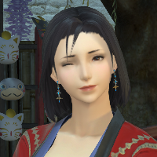

柳生礼芽
柳生大小姐

所以……所以……
所以我想感召空一，成为我的合伙人！
—— 柳生礼芽
柳生大小姐
所以……所以……
所以我想感召空一，成为我的合伙人！
—— 柳生礼芽
人物简介
几年前柳生家扩展外贸业务，却因用人不当，血本无归，家中长子更是荒淫无度沉迷赌博而被赶出家门。在这之后，复兴家族的使命变落到了礼芽头上。
柳生家最初是以兵武之道爬上高位的家族，其流派“乌川流”更是出神入化，然而迭代多次之后，轻武重商，剑谱虽在，剑法却早已荒废许久。柳生家中的产业更是每况愈下。于是乎，礼芽希望通过将家中剑谱传播至西洲以提升家族名望，缓步扩张家族产业，而身为柳生家未来的家主，礼芽目前却不得不一天打 5 份工补贴家用，住处则是家族以前做外贸时在海都留下的破败木屋。
就在即将因过劳成疾而住院时，礼芽因为某些原因遇到了……醉倒在街边的空一
二人交谈一番后，礼芽决定将自己漏风落尘的居所腾出来打造成商会据点与空一一同经营，并设柳生家剑道场发展本业。
本人因为长相平平而存在感极低，被酒客们评为“虽然是美人但感觉一点特点都没有” “丢进人堆里过几秒就找不到了吧？” “你是谁啊？”，性格温和，待人礼貌，就是发飙的时候比喝醉的空一还可怕，此外还有一点要强的小性子
通用语很烂，说话的时候带有强烈的东国口音。爱好是泡澡，练剑，字画，翻花绳和甜口的东西，对毛茸茸的小动物没有任何抵抗力，尤其是兔子
害怕的东西有哥哥，父上大人和母上大人，打不过的魔物，空一的黑暗料理，自己擅长的事情翻车
厨艺不错，但其实是从空一那里学来的，客户的评价是“比起老板娘的手艺还差一点”。在店里主要负责管账和立项，偶尔化身跑堂小妹照顾来往的客人。
很喜欢萨维奈风格的东西，对萨维奈舞者的着装和舞姿有着很强烈的憧憬，但父母表示“穿那么少真是伤风败俗”所以只能暗自喜欢。
TA的故事
“虽然您的服务能力确实很出众，但是我们不太能接受远东口音过重的员工，我相信以您的能力一定能在这片土地上找到更合适的工作的，请您不必灰心，说不定会有更好的机会在其他地方等着您呢？”
面试官的话语回荡在柳生礼芽的脑海中，哎，要是真有这样的机会就好了…这已经是自己在艾欧泽亚寻找的第五份工作了，而这一次居然直接在面试上翻车了，还是因为自己的口音问题…脑袋好晕啊，是应试的时候太紧张消耗了太多能量，导致本来就饥饿的肚子更加难受引发的无力，还是已经被失望的情绪冲昏了脑袋呢？不管怎么说，自己现在正踩在一团柔软的东西上……欸？什么？
“扑通！” —— 脚下忽然的失衡让礼芽朝前头狠狠摔了一跤，眼前顿时一片昏暗，自己是踩到什么了？刚才走神根本没来得及看了啊？还好，身上不是很疼，转过头去看看，是被踩到小腿正摸着痛处破口大骂的猫魅族女人。
“哎我（远东粗口）的谁（粗口）走路不长眼啊！” —— 一听就是女强人的声线啊，身上还散发着强烈的酒气，一定是喝高了，她腰上是什么？武士刀？不是吧都到艾欧泽亚了怎么还能遇到那种疯疯癫癫的酒鬼浪人啊…赶紧给人家陪不是吧，自己今天出门没带佩刀，万一她发起疯来砍自己肯定更吃亏吧？
“辉…辉常抱歉！”
“……你这通用语怎么洋不洋土不土的？”
醉醺醺的猫魅族浪人揉了揉腿摇摇晃晃着起身，擦了擦眼睛，身子离自己越来越近，礼芽甚至能闻出那若隐若现的酒味儿在变成自己熟悉的远东清酒香，这家伙身上还有家里祠堂常能闻到的檀香味儿，但是…能不能别离自己这么近啊！
没等礼芽反应过来，面前强势的女人先开口了：
“喂，同乡对吧？”
“啊…算是吧，我是……”
“陪我喝几杯，这事儿就这么过去了，不然我可不放过你喔？”
啊啊，肩膀就这么搭上来了？你这家伙，自己在这样的暗巷离里喝个烂醉也就罢了，怎么还要搭上我啊？再说即使是利姆萨 · 罗敏萨，这个点哪里还有开门的酒家啊？礼芽试着摆脱，但是这家伙的力气真大啊，即使是精通柔道的自己也没办法移开她这只纹着花臂的胳膊，不对，不能用柔道吧，万一又像之前那样把人摔得不省人事，到时候又赔一大笔医药费呢？
就这么被强拉硬拽着，礼芽和这个女酒鬼来到了另一条漆黑的街巷，唯一亮着灯的是街边一个座位刚好三个的小酒馆，店里除了鲁加族的老板正擦拭着麦酒杯，也见不着别的伙计和客人，老板嗤笑着看着面前的二人，不过还是更聚焦在自己身旁这个发酒疯的猫魅族身上。
“哟，空一姑娘，找了个新酒友啊？”
“呃…少废话，只是想找个人陪自己买醉，那不是谁都行喵？再说这个点还开着的也就你这里了，上酒上酒，价格好说……”
老板轻笑一声，有些同情地看了看礼芽：“你也是倒霉，被这么个家伙拉过来做酒搭子，这家伙以前的居所被不知道哪个傻逼点了，现在无家可归，只能睡旅店了……”
“哎！还提！还提！再嘴碎大嘴巴子抽你了喵！”
“行了行了，不提你那些伤心事，还是老样子，高酒精麦酒，加点樱桃汁，对吧？”
“对头…喂，你也喝一杯……”
礼芽一副非常不情愿的表情，端坐在座位上悄声对老板说着：“辣个，我明天还要上班，能不能只要点无酒精的……”
“哎哎哎我可听着嗷？你想上班？上个鸟班！这些给你，别特么惦记你那点薪资了，陪老娘喝一会儿！上你（粗口）什么破班，请假不会啊？”
女酒鬼从袖子里掏出个沉甸甸的金币袋，打开一看，里面尽是闪闪发光的金币，换算一下就是自己好几天的工资；虽然趁着别人喝醉接受别人的冲动打赏很不道德，但自己确实很需要钱，也很想好好休息一下，既然如此……
“那，小酌一杯吧…”
“哎对头，这才像话……”
“空一你啊，别到时候酒醒了后悔喔？”
“哎拉倒吧，千金散尽还复来，我之前勤勤恳恳攒下的积蓄还买不了这一时的欢喜了？来！尽管喝！尽管欢喜……”
“这家伙发起酒疯来真可怕啊……”礼芽一边心里骂着，一边接过老板递来的酒杯，里面是加了菠萝汁的麦酒，也算可口吧。自己多久没喝酒了？半年？反正很久了，唯一的深刻的记忆是成人礼上米酒的滋味，那时候父亲母亲和自己对坐着，满嘴都是什么催婚的话，还有对大哥的抱怨…不行不行，好沉重啊，如果总是想着那些糟糕的回忆，连杯中的麦酒也会变得苦涩无味吧？有没有值得回忆的好事呢？有吗？自己怎么一点也想不起来了？一开始自己带着家里的部分积蓄孤身来到利姆萨.罗敏萨码头的时候，解脱和自由的心情可是无比强烈啊？虽然很快就为其他七七八八的规划伤透了脑筋，但那时候自己倒是有着充沛的精力和十足的闯劲儿，如今来这里也有段时日了，怎么就成了如今的憔悴模样？是因为商会伙计的冷眼，就因为自己家族的那些欠款？还是因为一个个不靠谱的投资人让自己那么多钱打了水漂？又或者是后来迫于生计自己找的那几个兼职搞得自己每天凌晨三点才能睡觉还睡不够5个星时？真是的，这叫什么日子，但是就算是这样，一想到回去大概率是跟某个素不相识的有钱人家的少爷结婚，然后用彩礼和别的什么工作来偿还家里那一眼让人望不到头的债务，礼芽有种说不上来的心酸。
是啊，明明这样自己的人生也没那么麻烦了，牺牲的不过是自己的幸福嘛，这样家里的爸妈也就轻松一些了，可是大哥呢？因为欠下巨额赌债的他已经被赶出家门，前几天又像丧家犬一样回到家和爸妈大吵大闹，吵死了，好恶心…小时候那个带着自己爬上屋顶立下豪言壮语的大哥，那个带着自己游遍武京街头给自己介绍好吃好玩的地方的大哥，那个会贴心为自己梳理好头发戴好头花的大哥，就这么变成了自己害怕的模样，大吼大叫，摔着东西，嘴里尽是些污言秽语…礼芽还想喝麦酒，却发现原本的酒杯已经见底了。
“啊啦，续杯吗？你愣神的那会儿空一说了，酒钱她包了，你只管喝，不够还有嘞？”
“…麻烦再来一杯，拜托了。”
一杯，又一杯，再一杯；从原来那些辛酸和幸福交织的记忆，到后面被悲伤占据了大多数的回忆，杯中的麦酒不知为何越来越上头，自己的身体也越来越热乎，越轻快，旁边叫空一的姑娘已经开始和老板嬉笑怒骂起来，周围除了这家店里的喧嚣也没有别的声音了吧…好，喝，继续喝，要不试试把自己喝死呢？哈哈，自己可不能死啊，大哥都是个废物了，家里那两个可不就指望自己成为新的顶梁柱了吗…所谓的养育之恩到最后也就是像养年猪一样把自己当作牲口，当作一次性的祭品爆出一堆财富让他们的脸上笑得开心吧？自己这条命没了，他们也不会如愿了吧？好残忍喔，柳生礼芽？身为柳生家的大小姐，柳生家未来的希望，现在居然在一个小小的酒馆里陪着个酒鬼一起买醉，脑子里还想着这么消沉这么大逆不道的想法……噗嗤，贱人，自己逃离了家的牢笼，到这鬼地方朝外邦人点头哈腰来了……
“哐啷！”木酒杯砸在木头吧台上，发出一声巨响，礼芽的眼眶不知何时泛起泪水，脸色也泛红起来：“（远东粗口），喝嘛！去他妈的家族担子，去他妈的逼婚…你们都烂透了，大哥是混蛋，爸爸妈妈…也是混蛋！你们以为我是为什么才逃出来的啊？！你妈的，一个个的都想着把烂摊子砸我头上；都去死好了！都去死好了！这操蛋的家有什么好留恋的！去死！都去死……”
突如其来的爆发让其他两个人都吃了一惊，老板倒是风轻云淡地叹了口气，继续用麦酒龙头帮空一续杯，而空一则是挠了挠头，看着面前这个踉跄着挥舞双臂的疯女人发出更刺耳的喊叫声。
“哎，今晚怕是又要多招待个女疯子了……”
“什么叫又啊…不过这小姑娘怪可怜的？喂，大小姐，顶不住压力也开始释放了哇？”
礼芽只是捂着脸趴在桌子上，发出低沉的哭声，就当空一想要上去拍拍她，手落在礼芽肩膀上的时候，礼芽忽然扑了上来，紧紧搂住空一，手死死地捏着空一的臂膀，脸埋在人家空一的胸口上，依旧是低沉地啜泣着。空一一时也不知道该说什么，只是抚摸着礼芽的头，嘴里吐着一些安慰性的话语。
“好了好了，大不了别回去，在这边过日子不比那边好多了？哎…真是，怎么好端端喝个酒自己畅快，这会儿又做起安慰别人的活计来了……”
空一还想发点牢骚，却发现面前这个女人忽然又像是发觉自己做错了什么一样，畏缩着回到自己的位置，念叨着什么“成何体统”的词儿，惹的空一有些恼火。
“哎呀你这人真是，醉也醉不成个样子，真没意思。你还喝吗？我送你回去……”
“不回去！打死我也不想回去！”
“妈的到底醉没醉啊你这人，哎算了拉倒吧，真挪不动腿晚点把你带回后桅旅店去了，哎，我也是喝高了，找这么个人当酒搭子，怎么想的……”
礼芽再醒来时，看到的是一片陌生的天花板，随之而来的是一阵恶心和眩晕，眼睛还很痛。顶着模糊的意识，礼芽呜咽着撑起身子，看见昨晚那个拉自己喝酒的猫魅族正坐在旅店的椅子上背对着自己抽着烟，见自己醒了，只是平淡地转头。
“醒了啊？大小姐？”
“呃啊！我这是…宿醉了，还被你拉着来了后桅旅店？”
“脑子转得挺快嘛。”
“不行不行，今天本来是该去咖啡厅…已经来不及了啊…”
礼芽看了看墙上的挂钟，露出一副生无可恋的表情，这次迟到，自己原本就不多的薪水又会雪上加霜吧？等等，昨天晚上这个家伙是不是随便就丢给了自己好多钱来着？
“哎，对不住啦，需要我跟着你去和你老板解释发生啥事了吗？”
“你…你这家伙也太我行我素了…随随便便就拉着人给人灌酒，真是…”
“结果你自己不也喝个烂醉？”
猫魅族的女人调转座位，面朝着礼芽，手上的烟卷散发出刺鼻的味道。直到这时候，礼芽才认真看清了面前这个女人的模样，雪白的头发，一张脸孔倒是那种比较甜美的长相，散漫的东方服饰，一条纹着大花臂的胳膊上戴着念珠，散发出一种无形大姐头的威严；这家伙八成是混黑道的吧？难怪深夜里敢在那种暗巷肆无忌惮地发酒疯。昨天喝酒的时候，自己恍惚间好像听到了她的名字，空一？这是猫魅族该有的名字吗？
“那个…总之非常抱歉…”
“抱什么歉，是我把你扯进来的，昨晚那些钱正好给你赔不是了，倒是你，一个大小姐，受不了家里那点事，就自己跑来这地方了？”
“啊啊…昨晚那些抱怨你都听到了？”
“我是喝醉了又不是喝死了，别看我大大咧咧的，记性倒是不差，除了读书的时候。”
“这下底细全被你知道了……”
“也不见得，你叫什么名字？”
“柳生礼芽……”
“我操，柳生元吉的女儿？”
“欸？你居然知道？”
“你们柳生家以前富裕的时候就没少找我们干活，算是合作伙伴吧。那时候听说元吉老爷子还有个小女儿，没想到是你啊？”
“诶诶……？家里之前有这回事吗……”
“都是些收债之类的脏活，你一个小丫头，家里人怎么可能让你知道那些？倒是看你现在居然这副模样，柳生家大抵也是落魄了吧？”
“唔…自从大哥沉迷赌博后，家中所得的薪资大部分被他拿去赌场挥霍个干净了，我们那时候没人知道原来他还沾上了这个，然后就是…这几年不是一直都不太平嘛，又是解放战争又是终末危机的，搞得很多产业都停摆了，柳生家也不例外。大哥也是糊涂，那些家族的生意说转手就转手了，真是错过了好时候……”
“那你来海之都也不仅仅是为了逃婚吧？你也打算做生意？”
“嗯，虽然家里人真的烦死了，但毕竟是一家人啊…我来这边也想着通过商会收回之前在海之都的物流和丝绸产业，结果却是那群人见柳生家大势已去，一个个地把柳生家留下的东西蚕食殆尽了。后来又想着去银行贷款，搞个创业基金什么的，但是因为哥哥的那些劣迹，柳生家已经在他们嘴里名声狼藉了，自然也要不到足够的资金了……”
“噗嗤，那还真是惨淡啊？所以你就自己打工，看看能不能在自己干不动之前赚到足够的钱，给家里人一个交代？”
“也是目前最可行的办法了…我在西洲没有自己的人脉，虽然已经在打工的时候巴结过不少客人，但都不是什么值得一起创业的家伙……”
“你一个月多少妮美雅？”
“呃，两千？”
“噗嗤……”
“你笑什么！？”
“就你这个进度，创业资金攒够了，你也就人老珠黄了吧？”
“唔…虽然听着很不爽，但也确实是这样啦…”
“那你住哪啊？看你这副干净模样和海都那群打地铺的水手也不一样啊？”
“家里的长辈以前在这边做外贸的时候，买下过一个公馆当做商务来往的场所，但是后来也因为发展不顺搁置已久…可能再过一段时间地契过期就要被抵押了……”
“到时候也像我一样在这小旅店过活？还是说等钱用完了就回去？又或者，你觉得一个女孩子睡在海都大街是一件很安全的事情？”
“呃啊！你说话不要这么锐利嘛！真是的…倒是你，看着也不缺钱，为什么住旅店啊？等等，之前那个老板说你房子被人烧了？”
“是是，被以前的老同志纠缠了，为了拉我入局把我房子都点了，气死我了！那些收集的好酒，食材，衣服和收据和色情小说画本就这么没了，真他妈叫人伤心…虽然想要重建一个房子也不难，但至少不是现在…我想我还没从房子被烧的阴影中走出来，其他的店员也各有各的去处，至少我都给足了钱让他们自己有地方待着，最近身上缠了一堆破事，不想让他们卷进来…”
“这么多的积蓄？你不会真是什么帮派的老大吧？”
“帮派？算不上吧，老同志被我送走之后继承了他的一些东西，像是资金什么的，加上之前作为冒险者时攒下的积蓄和居酒屋存在银行的营收……你就别纠结那些了，反正也是累活儿干多之后攒的辛苦钱，但大多数还算干净。”
面前这个家伙，无论是从能力还是经历上来看，似乎都是个值得争取的合作对象？除了是个酒鬼，说话也好没文化的样子？
礼芽鼓起勇气：“那…要不去我那里看看？总比睡在小旅馆要强吧？”
“哦？打工的大小姐，要我去参观你的宅院？”
“宅院算不上啦！但当作住处肯定还不错…只是我平时忙于打工，基本上没什么时间回去而已，不如……”
“不如？”
“不如，我把场地提供给你，你过去看看？如果觉得不错，干脆就把它买下来，怎么样？”
荒芜的草地，霉味的木料，脱落的墙皮和屋檐里若隐若现的蜘蛛网，甚至窗户都开始出现裂纹，眼前东方风格的公馆虽有着雅致的外观，但已然是一副萧条的景象。打开嘎吱作响的门，里面倒是没多少灰尘，只是不时有阵阵凉意，像是某处漏风了。
“要我说也就比那小旅馆强一点吧…”
“唔……”
“柳生家的千金现在就住这样的地方啊？家里一个佣人也没有？”
“为了节约开支，已经解雇不少了…剩下的被我留了几个，在老家照顾爸妈…”
“真是的，这才几年，柳生家怎么就沦落成这副模样？”
“其实…柳生家的从商时间也不是很长，毕竟之前一直是习武世家，幕府统治之后国家得了太平，家族就通过经商另谋生路了；我来此的目的之一也是为了家族的独门绝学‘乌川流’能得到传承，只是现在还没有足够的资金把这里变成道场……”
“我懂我懂，无钱不成事嘛，你说的就是这本书吧？《柳生乌川流》……上卷？下卷呢？”
“下卷被大哥之前当作赌债的筹码输出去了……”
“……你大哥还真是糊涂啊，被赌博毁得面目全非……”
空一翻看着经卷，礼芽则在一旁补充：“乌川流包含了近身搏斗，兵器使用，还有战斗心得之类的，通过实战积攒的宝贵经验，宗派祖师柳生名一郎把全书分为了上下两卷，上卷教人如何进攻，下卷教人如何防守……如今被大哥那个糊涂蛋押给不知道哪路货色，想要再补全只怕是困难了……”
“虽说这东西写的是不错，但是只拿一半的功夫教出去，岂不是坑人嘛？”空一拍了拍书页上沾染的灰尘，将它放回面前低矮的书柜。“你也真是，又是复兴家族产业又是传承家族秘法，这秘法还丢了一半，全落在你肩上，你是铁打的牛马也要累垮了吧？”
“所以……”
“所以？”
“所以我想感召空一，成为我的合伙人！”
礼芽憋红了脸，老半天才憋出这么一句话：“您有实力，经验也比我丰富很多，而柳生家虽然陷入困局，在远东却依旧有着足够的名望，如果能将之前的产业全部夺回，身为救柳生家于水火的大贵人，您自然也能为自己在远东博得崇高的地位，更何况那些背后靠柳生家的基底过活的老百姓，这份天大的人情，柳生家自然不会忘记！”
空一没说什么，只是从兜里掏出烟卷，跨过敞开的房门，来到院子外头，礼芽向再说些什么，但空一只是背对朝她摆了摆手，叼着不知道何时燃烧的烟沉思着，脸色很是沉重，忽然，她转头与礼芽对视。
“你说的那些东西都不是我要的，这么对我开诚布公，我也不该对你有所隐瞒；你多久没回远东了，知不知道他们又张贴了一波新的通缉令？”
“什么……？”
“老娘当年是他妈的攘夷志士来的，本来洗手不干了，又被某个旧时的伙伴拉去干幕府，现在的赏金说不定真能帮你还那一屁股的债呢？”
还没等礼芽反应过来，空一就转身贴到礼芽跟前，一个扫腿再将她死死按在公馆陈旧的木地板上：“你这样低三下四求一个不知道底细的家伙，就因为她看上去有点小钱？你是不是打工打傻了，病急乱投医了？还他妈的找了个新信义组的骨干成员，眼光真好啊？猜猜我接下来会把你怎么样？绑了你，再从你那倒霉父母身上敲出点油水？送你回去之前再把你丢贼窝子里给那群没涵养的海盗们耍一耍赚个盆满钵满？又或者，我现在就杀了你这个知情的家伙，省得将来幕府的狗腿子们跨海来找我，把我现在本就不安定的生活毁了？知道我为什么住在旅店，连身边的人都遣散了吗？就我这样一个贼人，你也敢找我合作？你怕不是在说笑吧？哈哈？”
空一从被衣服遮挡的大腿里掏出一把小刀，眼看着就要朝礼芽的面颊上划去，礼芽则是拼命反抗，奈何她的关节早就被空一制服得动弹不得，只能呜呜地流着眼泪，空一那凶残的眼神对她来说无处可躲，不过只是一刹那，礼芽忽然想明白了什么，她忽然回以坚定的眼神转头看向空一。
“如果真是那样，您现在就可以杀了我，或者按你说的那些龌龊的行径去做，为什么要白费口舌，告诉我你是攘夷志士？”
“嗯哼？”
“你…你应该是有求于我，只是让我看到这些不稳定的因素…这样的话在你的威逼之下我不想答应也得答应了，对吧？”
眼看礼芽说出这番话，空一将刀收了回去。
“不妨再说说你的诉求…空一，大姐？你们攘夷志士想要的我从不清楚，但是万一我们柳生家真的能给呢？”
“哼，到底还是有两下子，这么上道。我不缺钱，但自从那个点了我房子的混蛋被我亲手送上路之后，我忽然意识到不能这么消沉下去；仅仅是作为一个平凡人安度余生，根本不值得曾经那些同伴的牺牲。礼芽，你不知道我这条命之所以撑到现在，背后究竟背负了多少……我想要做的，是实现同伴们的遗愿，实现所谓的大义，让所谓的远东不再只是军阀头子，无良富商和迂腐政客们的远东，不让这些猪猡骑在老百姓头上，把穷人的性命视为草芥。你以为现在的幕府是什么好东西？被财阀压榨终身的平民，随意被试刀的流浪汉，关在花街永不得自由和归处的少女，这些东西向来就不对，但从未消失……听起来很远，对你一个小家碧玉来说挺无所谓的，对吧？但对我来说，我不介意用一切手段来实现一个更美好的世界，如果还有这些肮脏的东西，我便与它斗争到底。而这需要影响力，他们或许不会听信一个流浪儿出生的我给他们扯淡，但如果是你这样的名门望族想要做的事情，一定还有人相信的，对吧？”
“你是说…你想要通过柳生家的影响力组建力量，推翻幕府？”
“嗯哼，如果是那样再好不过了，我讨厌幕府，但又知道仅仅推翻这一栋大厦会砸死多少人；路要一步一步走，不是嘛？我们定下的规矩，所有人都说好，这是第一步，而当有能力推翻原先的规矩，便是第二步的开始，懂我的意思吧？”
“…我知道了，但一个真的想要构建新秩序的人，不会这样压迫着一个手无寸铁的小女生，不是吗……”
空一一个翻身松开了礼芽身上的桎梏，与礼芽拉开距离，而礼芽则是一边大口喘气一边起身，整理着自己被打乱的头发。
“所以，还想和我合伙吗？柳生礼芽大小姐？我想你也没有别的选择了，对吧？”
“真是…上了你的道啊…空一…你确实很有能力，能说出那番话，也说明你并非一个冷漠无情的人…只是我不能拿柳生家的未来开玩笑…这太冒险了……”
“我理解，但也只有我能帮你，也愿意帮你处理你们家的烂摊子了不是嘛？你是想走出这里之后通报黄衫队喝黑涡团，把我送进牢里，之后继续用你那点微薄的力量寻找更合适的投资人，还是和我互相成就？你用你们家族的影响力来帮我的规矩增加影响力，构建一个让更多人受益的理想环境，我用我的实力，财力还有在西洲的人脉挽救你那个岌岌可危的家族？”
礼芽捂着额头扶着身边的桌子，苦笑着看着空一：“我真羡慕你的运气，也欣赏你的谈判手段，空一小姐，或许我就是你现在最需要的那头肥羊了？”
“嗯哼，你也需要我这匹恶狼来敲打那些混账，把属于你家的东西拿回来重振家风，不是嘛？如果你因为今天的事情对我心生怨恨，改日要做掉我也不迟？”
“不…我知道你也有苦衷，攘夷志士…虽然我没怎么接触过，但如果他们确实是像你这样狠辣聪明又胸怀大志的人，我，并不讨厌……”
“那就祝我们合作愉快？”空一主动伸出了手。
“嗯，合作愉快……”
礼芽没有丝毫的犹豫，牢牢握住空一的手。
“既然已经达成一致，我想气氛并不需要这么紧张了，那么…恭喜你，礼芽小姐，你现在有一个几乎能为你解决一切问题的二把手了，作为柳生家未来的家主，你才是大姐头，有什么我能为您效劳的吗？”面带微笑的空一退后几步，朝着礼芽行了一个标准的仆从礼。
“……明明你比我更强的呢；在开始我们的计划之前，我想我们应该好好地整顿一下这里，不是嘛？”
利姆萨.罗敏萨的烈日变为夕阳，两个劳碌的身影将这座陈旧的公馆变得焕然一新，此时的空一和礼芽正大汗淋漓地坐在楼梯间，一边喘着粗气，一边喝着麦酒欣赏着一天的劳动成果。
“没想到你一个大小姐，居然也这么擅长家务活？”
“比起你这个贼窝出身的大姐头差远了呢……以前经常干这个吧？”
“嗯哼，我还是小丫头的时候，技艺都是攘夷的大家交给我的，为了报答他们的养育之恩，在我双手染血成为忍者前，都是这样每天重复着一样的杂活…”
“空一从来不是一个冷漠的人，无论是今天发生的事，还是你白天干活的时候给我讲的那些故事…我想我们的关系可能并不只是合作伙伴，或许也能成为朋友呢？”
“噗嗤…我靠，你在说笑吗大小姐？和一个赏金八十万妮美雅，未来还可能更多的造反派头头成为朋友？不要命了？”
“真正的朋友都是无价的，不是吗？你并没有你描述得那样可怕，或者，也只有你这样可怕的人会接下柳生家的烂摊子了？”
“嗯哼，朋友……你要真是我的朋友，我不可能拉你来干这种掉脑袋的活儿的。我会先把你骂一顿再让你滚得远远的，这样我要是失败，也轮不到你掉脑袋。”
“可我们已经是一条船上的人了，不是嘛？”
“说得好听，谁知道你以后会不会卸磨杀驴呢？”
“如果是那样，你那么聪明，不可能不把柳生家拖下水吧？与其那样，力保你才是最正确的选择。”
“真聪明啊……”“温柔的好话劝不动你的啦，你这人太没安全感了，就喜欢听一些实在又残酷的东西…”
“一天时间你就把性格拿捏得死死的，真不愧是你吗？”
“嘿嘿，真当我柳生礼芽是吃白饭的啊？”
“是是是，我的大小姐…这杯敬你，真是头铁啊，一个人扛着这么沉重的责任前进……”
“这杯也敬你，空一，背负着那么沉重的过去，还能振作起来找到自己的目标，我要是有你这么狠辣就好了……”
“这杯敬我们，迈出事业的第一步，我有了重新发展的地基，你也有了个更干净的住处…啊，刚好只剩最后一点了？”
“那么，这杯敬我们的明天！我喜欢浪漫一点的说法！”
“嗯，敬明天，为了我的大义，你的繁荣。”
“敬明天，为了我的家族，还有我的朋友！”
“真是天真烂漫的少女发言啊…明明你比我还大两岁吧？”
真是的！年龄比你大是一回事！小看我可不对了！等着瞧吧！”
空一笑了笑，抿了一口面前的酒杯，“我很期待喔？”